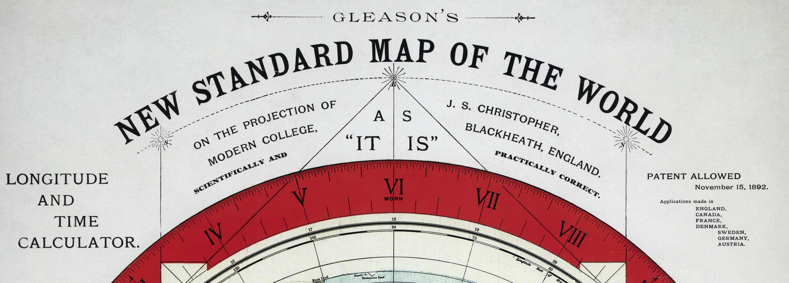
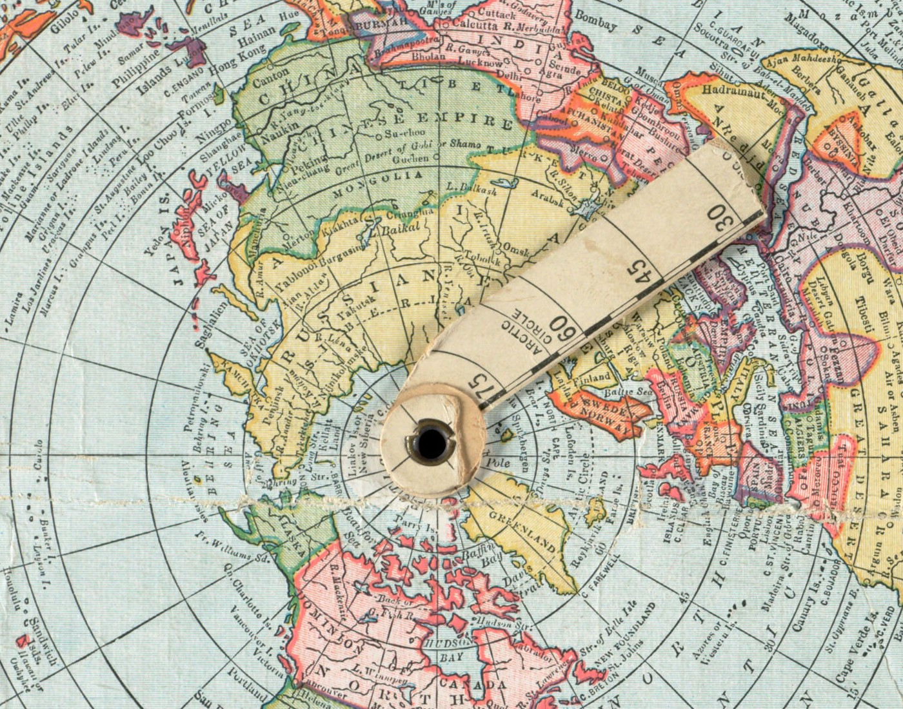
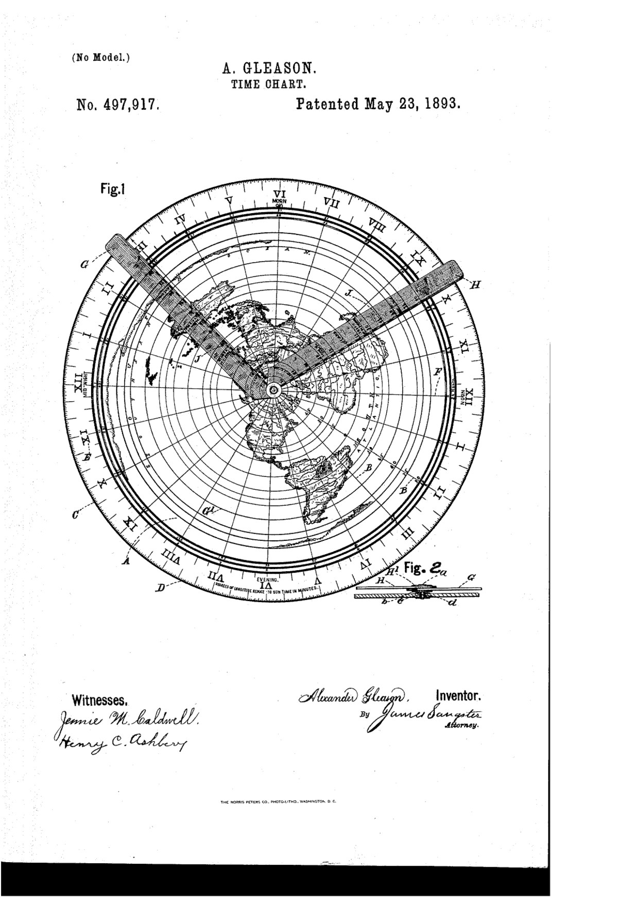

Quotations are given in the original English, as they are the primary source. The surrounding text is translated.
Reference
The sheet

The chart is a circular world map, north pole at the centre, ringed by a dial divided into twenty-four hours in Roman numerals. Around the foot of the dial it prints its own rule: degrees of longitude reduced to sun-time = 4 minutes. Two scale rulers run along the bottom of the sheet, and two small solstice diagrams sit at the lower corners.
Two copies
The chart on this site is a 2013 Lone Star Art reprint held by the American Geographical Society Library, chosen because its map face is clear. The 1892 impression at the Boston Public Library still has an indicating arm pivoted at its centre, lying across Scandinavia and north-west Russia.

The two agree geometrically. Fitted independently, the reprint's scale stands to the original's in the ratio 1.2513, against a sheet-width ratio of 1.2529, so the reprint reproduces the plate to about a tenth of a percent. Both put the Greenwich meridian at 90.0° from image north.
The patent
Gleason filed on 15 August 1892 and was granted U.S. Patent 497,917 on 23 May 1893. The title on the drawing sheet is Time-Chart.

How it is built
A represents the map proper which is circular in form, and flat; having twenty-four radiating or meridian lines, B, extending from the center to the circumference. The periphery, C, of the circle being divided into divisions, D, which represent the minutes in twenty-four hours… U.S. Patent 497,917, lines 25–32
On the face of the map are circular lines from the center or north pole to ninety degrees South representing the latitudes of the earth, both north and south of the equator. U.S. Patent 497,917, lines 53–57
That sentence fixes the geometry completely. The centre is the north pole, latitude runs outward to 90° South at the rim, and the spacing is even. Combined with the meridians:
The extorsion of the map from that of a globe consists, mainly in the straightening out of the meridian lines allowing each to retain their original value from Greenwich, the equator to the two poles. U.S. Patent 497,917, closing paragraph
A map with straight radial meridians holding their true longitude, and evenly spaced latitude circles measured from the centre, is an azimuthal equidistant projection centred on the north pole. That is a standard projection, still used for polar route charts and for the emblem of the United Nations. Its defining property is the one its name states: distances are equidistant, meaning true to scale, along radials from the centre. Along any other line they are not.
How it is meant to be worked
In operating with this map I employ two indicating arms G and H, pivoted together by means of a pin… so that these indicating arms have two movements, a movement one on the other and one or both together around the center of the map. U.S. Patent 497,917, lines 60–74
In order to ascertain the time of day or night, in any part of the world, corresponding to your own meridian time; first: place the lower indicating arm, G, into the center socket receptacle, letting the graduate edge of the arm be in line on your own meridian time… Now you wish London’s corresponding time: Place the arm H, on the meridian of Greenwich, which is London, and marked, F, at the same time holding the arm G in its place. You have now got the absolute corresponding difference of time between New York and London, which is five hours in round numbers. U.S. Patent 497,917, lines 86–101
The instrument is worked by swinging two arms about the centre and reading the angle between them against the hour dial. Every operation the patent describes is an angular one, taken about the pole.
The claim confirms the same reading:
The combination with a time chart of a circular time dial encompassing the circular map, a disk or dial graduated and divided to indicate longitude and sun time on any meridian line or intervening lines, two indicating arms loosely pivoted to the center of the circular map, numerals indicating degrees of longitude on each of said arms… U.S. Patent 497,917, the claim
The book
Gleason set out the same scales in Is the Bible From Heaven? Is the Earth a Globe? (Buffalo, 1893), chapter XVII, pp. 340–352.
The scales printed on the sheet

Fig. 37 gives the relative difference between English and nautical, or geographical miles. The first line of divisions, in fig. 37, it will be seen runs from 1 to 208 miles. Of these there are 69 and 16-100 to each degree of longitude (on the Equator), as represented on the lower edge of fig. 37. It will be further noticed that 208 English miles are equal to 180 nautical, sea, or geographical miles. Gleason 1893, p. 349
Longitude and time compared
Since the sun makes his revolution through the heavens and above the earth in twenty-four hours, from east to west, or through 360° of longitude, it follows that in one hour he passes one-twenty-fourth of 360°, or 15°; in one minute of time through one-sixtieth of 15°, or 15′ arc, and in one second of time through one-sixtieth of 15′ arc, which is equal to 15″ arc. Gleason 1893, p. 350
The table he prints beneath it, headed Comparison, for a difference of:
| Longitude | Time | Distance |
|---|---|---|
| 15° | 1 hour | 900 longitude miles |
| 15′ arc | 1 minute | 15 miles |
| 15″ | 1 second | 1/60 of 15 |
| 1° | 4 minutes | 60′ |
| 1′ arc | 4 seconds | 1/360°, or one mile |
| 1″ | 1/15 second | 1/3600° of a mile |
The English land or statute mile is 5280 feet. The nautical, sea, or Solar mile is 6075 feet. Gleason 1893, p. 350
Gleason states the mile relation three times and the three do not quite agree: 5280 against 6075 feet gives 1.15057, the 69.16 English miles to the degree gives 1.15267, and Fig. 37’s 208 against 180 gives 1.15556. This replication uses the foot definition, since that is a definition rather than a reading taken off a ruler. The difference is about half a mile in two hundred.
The instrument described
The circle of the map is fourteen and one-fourth inches, having a time dial on which is marked in bold Roman numerals the twenty-four hours of the day and the minutes of the hour. The face of the map is provided with two detatched radiating arms from the center to the circumference of the time dial… On the arms is stamped the degrees of latitude; by the operation or moving of these arms the relative time of day or night is quickly determined… Latitude and longitude, and the existing difference of time between any places may be determined without the aid of figures in a moment’s time after the places have been located on the map. Gleason 1893, pp. 350–351
The stated outputs are latitude, longitude, and difference of time. Distance between two arbitrary places by straight edge is not among them, and no passage in chapter XVII offers such a method.
Reading distance off an azimuthal equidistant chart
Three cases, in order of how much work they take.
1. Along a radial
Any line running straight out from the centre is a meridian, and the chart is true to scale along it. Pole to anywhere, or two points on the same meridian, can be measured with a straight edge and read against the latitude scale directly. The chart itself carries this scale on its indicating arm, which is why the arm is graduated in degrees of latitude.
2. Along a parallel
A degree of longitude is 60 geographical miles at the equator and shrinks with the cosine of the latitude: 30 miles at 60°, and nothing at the pole. Gleason tabulates this in his Fig. 43, Diagram showing Longitude in Miles at any Latitude North or South of the Equator (p. 402). A degree of longitude is a fixed amount of time everywhere, four minutes, but it is not a fixed distance.
3. Between any two points
Neither of the above applies, and a straight edge is measuring a chord across a projection that does not preserve straight-line distance away from its centre. Two ways to get it right:
- Compute the angle between the two places through the graticule and take it at 60 geographical miles to the degree, which is what the shortest distance readout on the chart page does.
- Recentre the projection on one of the two places. The line to the other is then a radial, and a straight edge reads correctly along it. This is what the Recentred on A view does: the same engraving, replotted about a different centre.
This is not a peculiarity of this sheet. It is true of every azimuthal equidistant map ever drawn, and it is why polar route charts are recentred on the departure point rather than measured across.
Sources
| Base image | Gleason’s new standard map of the world, Alexander Gleason, Buffalo Electrotype and Engraving Co., 1892; reprinted by Lone Star Art, 2013. American Geographical Society Library, University of Wisconsin–Milwaukee. |
|---|---|
| 1892 impression | The same map, Norman B. Leventhal Map & Education Center, Boston Public Library. No known copyright restrictions. Shown above for the indicating arm. |
| Patent | Gleason, A. (1893). Time-Chart. U.S. Patent No. 497,917. Filed 15 August 1892, granted 23 May 1893. |
| Book | Gleason, A. (1893). Is the Bible From Heaven? Is the Earth a Globe? Buffalo, N.Y. Chapter XVII, pp. 340–352; Fig. 43, p. 402. |
| Coastlines | Natural Earth, 1:110m land polygons. Public domain. Used only to fit the georeference, not drawn on the chart. |